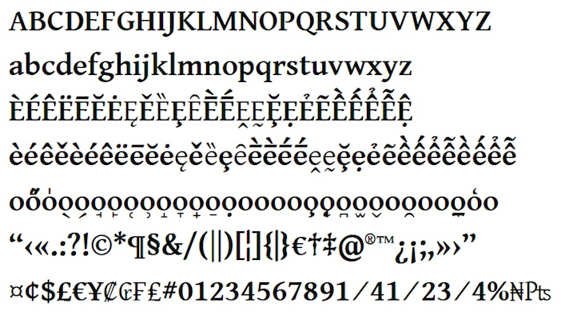
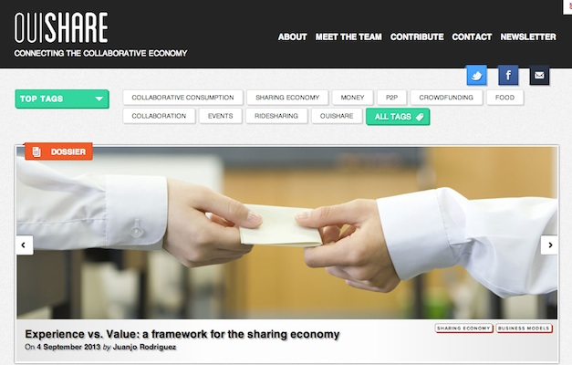
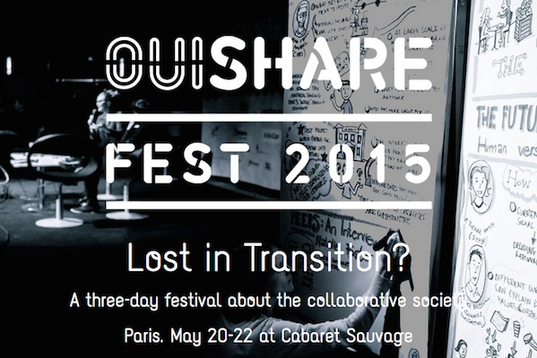
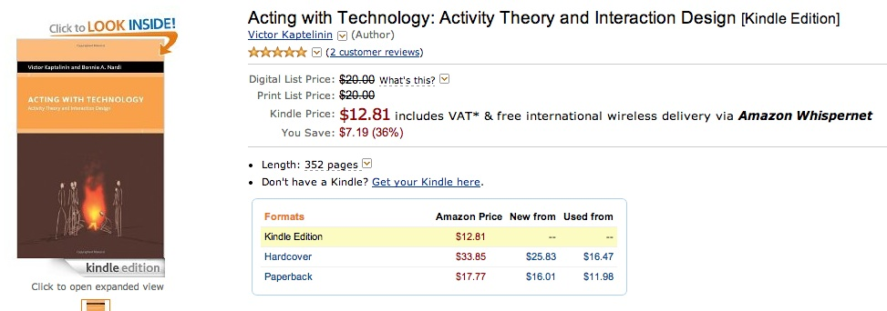

Design with the user
21 November 2013
1. Open Design + Metadesign: concepts and development
2. Intellectual property and design: laws and the design process
1. Open Design + Metadesign: concepts and development
Web 2.0

Source: http://en.wikipedia.org/wiki/You_(Time_Person_of_the_Year)+
http://content.time.com/time/magazine/article/0,9171,1570810,00.html
Web 2.0 + Design

Peer-to-Peer

Peer-to-Peer + Design
Source: http://www.kiva.org/lend/333427
Peer-to-Peer + Design
Intercontinental Ballistic Microfinance from Kiva on Vimeo.
Source: http://vimeo.com/28413747
Crowdsourcing

Source: http://www.innocentive.com/
Crowdsourcing + Design
Source: http://www.crowdspring.com/
Mobile: Single user designing, no collaboration

Source: http://www.mshape.com/
Mobile: Smart Mobs, Ubiquitous Computing
Hybrid models: OpenIDEO
Source: http://www.openideo.com/
Hybrid models: OpenIDEO
Open Source Everywhere
Software is just the beginning … open source is doing for mass innovation what the assembly line did for mass production. Get ready for the era when collaboration replaces the corporation.
Source: Goetz, T. (2003, November). Open Source Everywhere. Wired, 11(11). Retrieved from http://www.wired.com/wired/archive/11.11/opensource.html
Open Drink
Source: http://en.wikipedia.org/wiki/Free_Beer+
http://en.wikipedia.org/wiki/OpenCola_(drink)
Open Biotechnology

Open Hardware Definition
Source: http://freedomdefined.org/OSHW
Open Hardware Definition Logo

Source: http://oshwlogo.com/
Open Source: what is it?
A (software) project published with a license that facilitates its access + modifying + sharing in a collaborative way.
A (software) project developed collaboratively by a community, based not on hierarchy but on reputation.
Open Source + P2P + Design: possible directions
- Adoption of open source and p2p principles, practices and organizational forms inside the design discipline: Open Design
- Use of design knowledge, tools and practices for replicating open source and peer-to-peer initiatives: Open Metadesign - Open P2P Design
1.1 Open Design
Open Design: what is it?
A design a project published with a license that facilitates its sharing and that can be “compiled” or “manufactured” locally.
Open Design refers to every kind of design projects that can be shared in a digital format over a network.
Open Design: what is it?
- sharing
- collaboration
- open licenses (?)
- source code --> artifact
Open Design Definition, from 2000

Open Design Working Group
Source: http://design.okfn.org/
Open Design Working Group; Mailing List

Open Design Working Group: Mailing List Archive

Open Design Definition, from 2012 - ...

Source: https://github.com/OpenDesign-WorkingGroup/Open-Design-Definition
Open Design: Product Design - Thinkcycle
Source: Sawhney, N. (2003). Cooperative innovation in the commons: rethinking distributed collaboration and intellectual property for sustainable design innovation. Massachusetts Institute of Technology. Retrieved from http://dspace.mit.edu/handle/1721.1/61861
Open Design: Product Design - Ronen Kadushin

Source: http://www.ronen-kadushin.com/index.php/open-design/
Open Design: Open Design / Open Hardware - RepRap

Source: http://reprap.org/
Open Design: Typographic Design - Gentium
Source: http://scripts.sil.org/cms/scripts/page.php?site_id=nrsi&item_id=Gentium
Open Design: Fashion Design - OpenWear

Source: http://www.openwear.org/
Open Design: Architectural Design - Open Architecture Network

Open Design: Architectural Design - OSBA @ MIT

Source: Kovidvisith, K. (2007). Open source building alliance ecology : the Internet framework for consumer driven participative design (Thesis). Massachusetts Institute of Technology. Retrieved from http://dspace.mit.edu/handle/1721.1/39313
Open Design: Architectural Design - WikiHouse

Source: http://www.wikihouse.cc/
Open Design Competitions: Unlimited Design / Open Design Contest

Source: http://opendesigncontest.org/
Open Design Competitions: Autoprogettazione 2.0 @ Domus

Source: http://www.domusweb.it/en/news/2012/04/11/autoprogettazione-2-0-on-display.html
A completely open product: Open Design, Hardware, Software: OpenMoko
A completely open product: Open Design, Hardware, Software: OpenMoko

A completely open product: Open Design, Hardware, Software: BugLabs
Source: http://buglabs.net/
A completely open product: Open Design, Hardware, Software: BugLabs
A completely open product: Open Design, Hardware, Software: BugLabs

A completely open product: Open Design, Hardware, Software: BugLabs
BugLabs + Ford

Source: http://openxcplatform.com/
First global company to adopt Open Design: Nokia
Source: http://www.openp2pdesign.org/2013/open-design/first-global-company-to-embrace-open-design/
Open Design: becoming mainstream
Open Design: becoming mainstream

Source: http://opendesignnow.org/
Open Design: becoming mainstream
Source: http://www.droog.com/news/category/design-for-download-2/
Open Design: becoming mainstream

Source: http://www.instructables.com/community/Instructables-Joins-Autodesk/
Open Design: becoming mainstream
Source: http://www.123dapp.com/create
Open Design: becoming mainstream
Source: https://github.com/openp2pdesign/Open-Design-Exhibition
Sketch Chair: Open Design as code
Source: http://www.sketchchair.cc/
Sea Chair: Open Design as process
Sea Chair: Open Design as process

Sea Chair: Open Design as documentation
Open Source Sea Chair from Studio Swine on Vimeo.
The current status of Open Design
- single persons or small groups design a project and then just publish it online
- lack of new tools, processes, systems that enable designers and users in developing open design projects
- where is the collaboration?
- where are the open processes?
- where are the communities?
The current status of Open Design
The experience of a user of Open Source software

Source: http://sourceforge.net/
… the big picture of Open Source: the process
code_swarm - Python from Michael Ogawa on Vimeo.
… the big picture of Open Source: the process
… the big picture of Open Source: the process
A more systemic definition of Open Design (1)
A collaborative distributed system of design & manufacturing based on:
- sharing
- collaboration
- open licenses ?
- open and distributed manufacturing technologies
A more systemic definition of Open Design (2)
A system of agents that:
- use
- design
- manufacture
- distribute
- manage the end of life
- ...
1.2 Open Metadesign - Open P2P Design
Open and P2P services: Getaround
Source: http://www.getaround.com/
Open and P2P services: AirBnB

Source: https://www.airbnb.com/
Open and P2P services: Collaborative Consumption
Source: Botsman, R., & Rogers, R. (2010). What’s Mine Is Yours: The Rise of Collaborative Consumption. HarperCollins e-books.
Open and P2P services: Collaborative Consumption
Open and P2P services: Collaborative Consumption
Source: Gansky, L. (2010). The Mesh: Why the Future of Business Is Sharing (Reprint edition.). Portfolio.
Open and P2P services: Collaborative Consumption
Source: http://meshing.it/companies
Open and P2P services: Collaborative Consumption
Source: http://ouishare.net/
Open and P2P services: Collaborative Consumption
Source: http://ouisharefest.com/
Open and P2P services: RED, Open Health
Open and P2P services: RED, Open Health
Towards Activity-centered Design
HCD asserts as a basic tenet that technology adapts to the person. In ACD, we admit that much of human behavior can be thought of as an adaptation to the powers and limitations of technology.[...] People do adapt to technology. It changes social and family structure. It changes our lives. Activity-Centered Design not only understands this, but might very well exploit it.
Source: Norman, D. A. (2005). Human-centered design considered harmful. interactions, 12(4), 14–19. doi:10.1145/1070960.1070976 Retrieved from http://www.jnd.org/dn.mss/human-centered_desig.html
Gay - Hembrooke "Activity-centered Design"
Source: Gay, G., & Hembrooke, H. (2004). Activity-Centered Design: An Ecological Approach to Designing Smart Tools and Usable Systems. The MIT Press.
Kaptelinin "Acting with technology"
Source: Kaptelinin, V., & Nardi, B. A. (2009). Acting with Technology: Activity Theory and Interaction Design. The MIT Press.
Activity Theory: Activity System
Source: Engestrom, Y. (1987). Learning by expanding: An activity-theoretical approach to developmental research. Orienta-Konsultit Oy.
Activity Theory: Activity System
Activity Theory: Activity System

Activity Theory: Activity System
Source: Engestrom, Y. (1987). Learning by expanding: An activity-theoretical approach to developmental research. Orienta-Konsultit Oy.
Activity Theory: Activity System
Source: Engestrom, Y. (1987). Learning by expanding: An activity-theoretical approach to developmental research. Orienta-Konsultit Oy.
2. Intellectual property and design: laws and the design process
Thank you!
Massimo Menichinelli / info@openp2pdesign.org / @openp2pdesign

This work is licensed under a Creative Commons Attribution 3.0 Unported License.
Massimo Menichinelli - 2013
openp2pdesign.org